Avvallando le mie malsane proposte nel canal del Ferro, Greta e Andrea mi invitano ad andare come al loro solito nelle clautane, in particolare sulla Croda Bianca in val Mesath, posto nel quale non ho mai messo piede. Mi è davvero piaciuto!
Il bosco di faggi a inizio maggio è qualcosa di stupendo, sarei rimasto ad osservalo per ore.
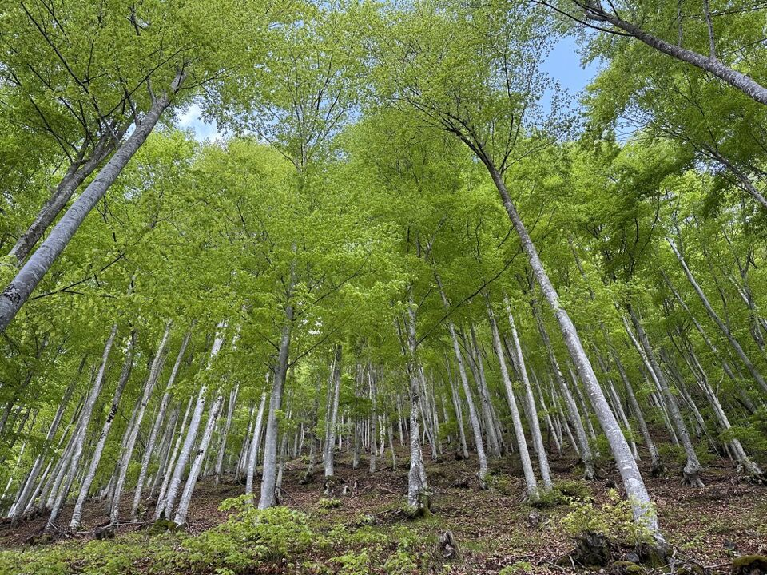Il micidiale CAI 906 ci porta in circa 2h in forcella Candúabo: molto interessante il versante sud del Toc - cima Mora, che sicuramente permette di accedere alla cresta (abbiamo visto un camoscio intento a farlo).
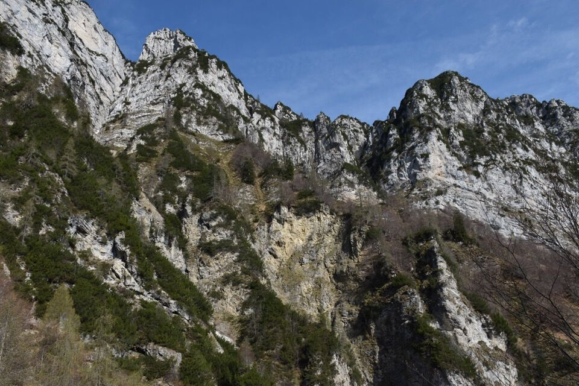Dalla forcella il sentiero continua in quota, aggirando tutto il versante sud (lato val Gallina) della Croda Bianca su percorso davvero molto bello e panoramico.
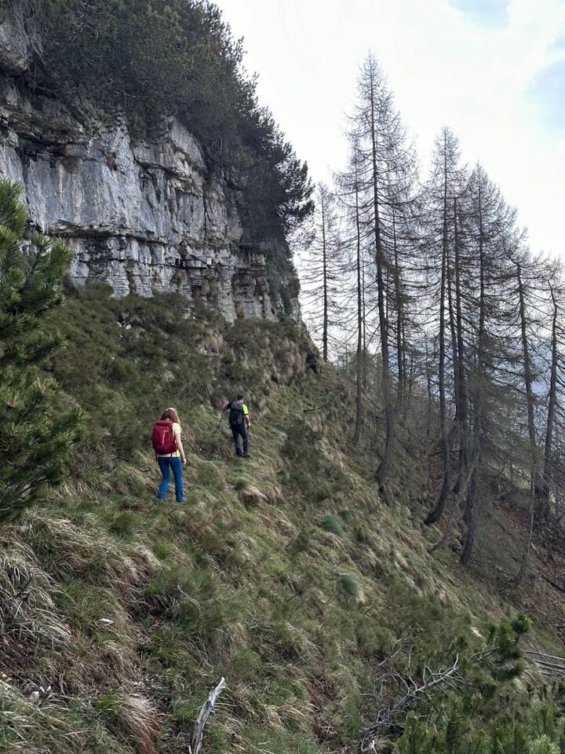 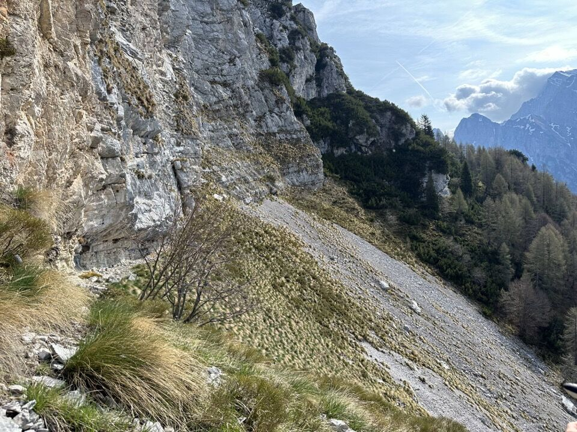 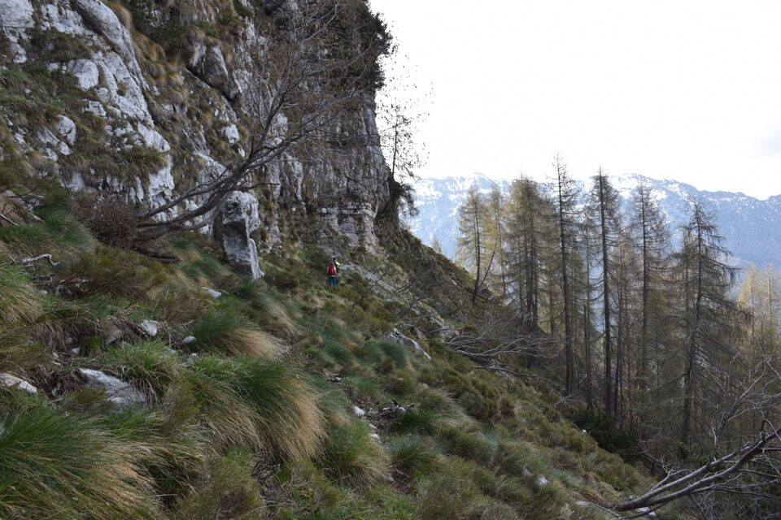Il Formigoler: micidiale!
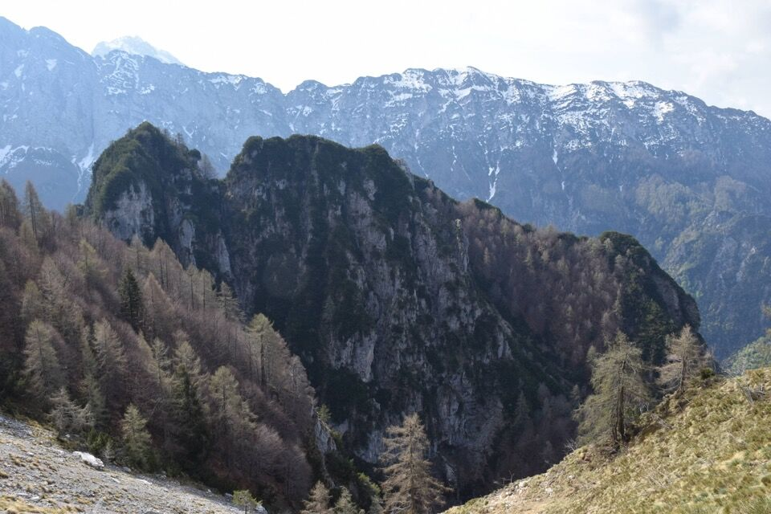Provo a convincere invano i miei compagni ad iniziare a salire prima di arrivare a forcella Ogre, cosa di cui mi ero convinto consultando la CTR. Abbiamo fatto cosí in discesa: avremmo risparmiato almeno mezz'ora e un sacco di fatica. Per chi ci va: arrivando da forcella Candúabo, a pochi minuti da forcella Ogre, in prossimità di un tronco scheletrito e due grossi tagli, salire senza traccia alla costa boscosa che si vede in alto; evidente poi l'inizio del canale a mughi.
Ad ogni modo... da forcella Ogre scendiamo un po' e rimontiamo un ripidissimo valloncello che ci porta all'inizio del canale a mughi.
La fittissima mugheta ci fa faticare parecchio, ma obliquando verso dx troviamo un cengia che seguiamo e ci permette di montare in cresta.
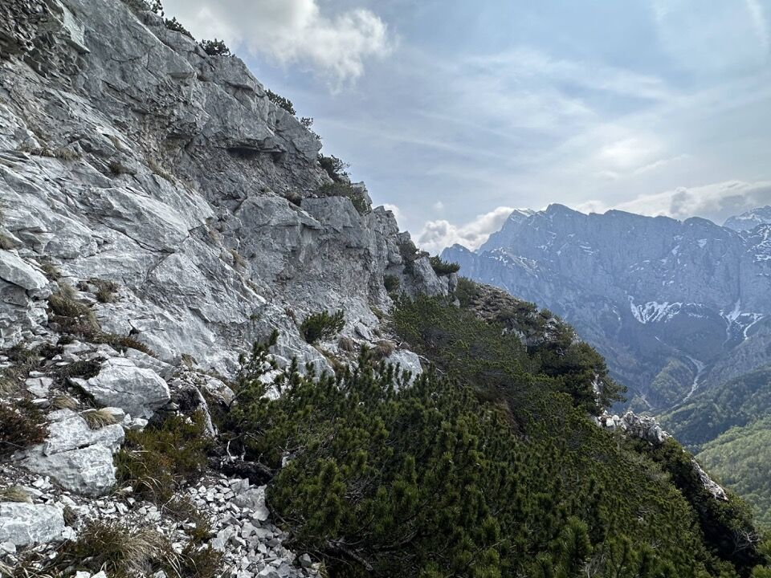 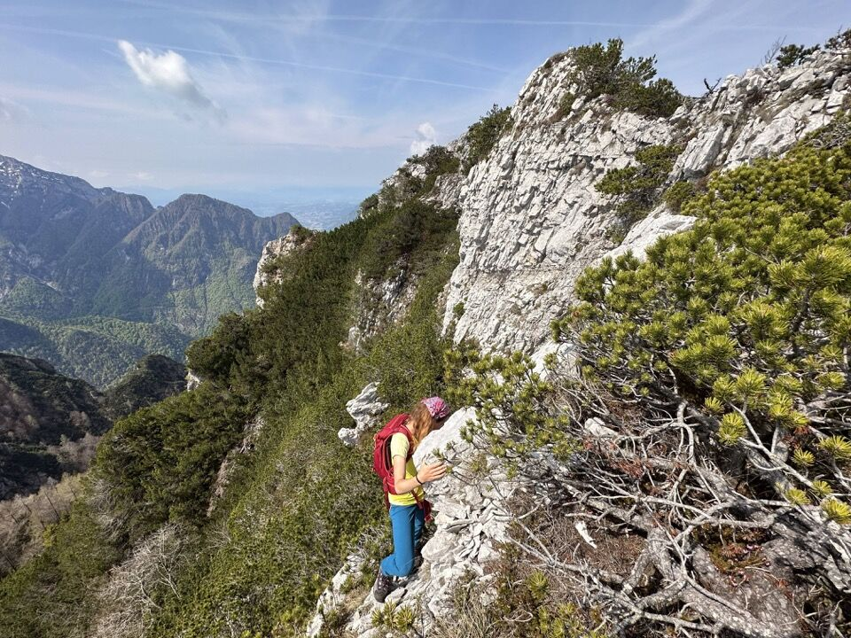Verso la cima principale. La cresta presenta dei tratti assai affilati, ma i mughi danno un po' di sicurezza.
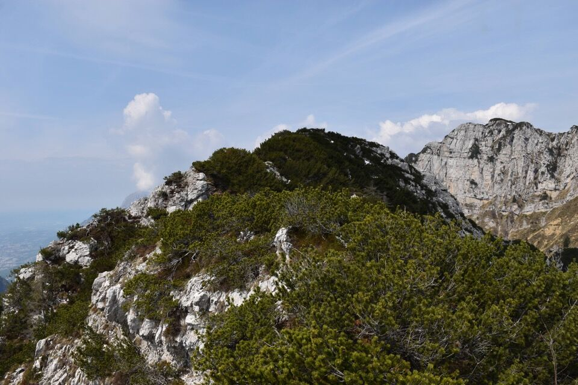 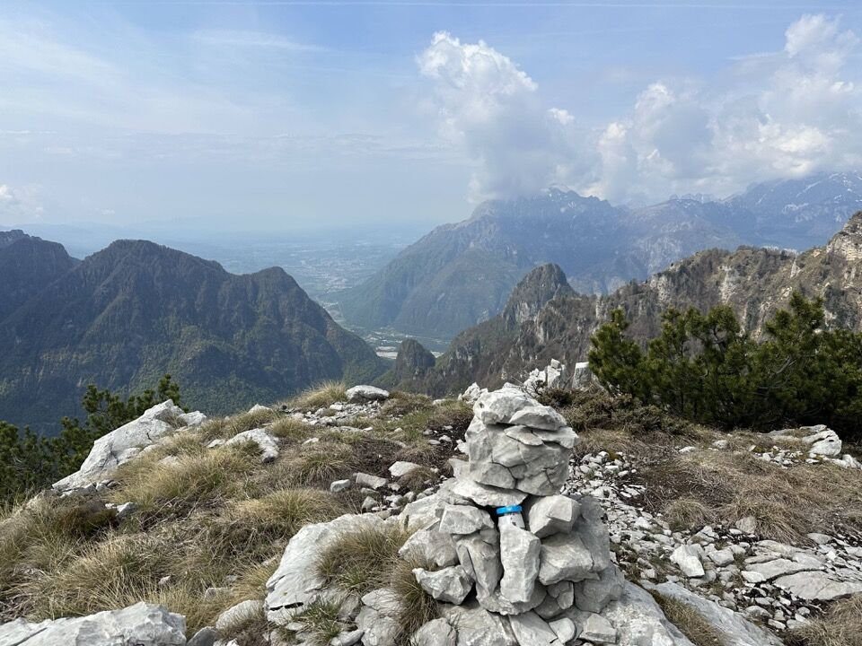Lo Spiz Gallina.
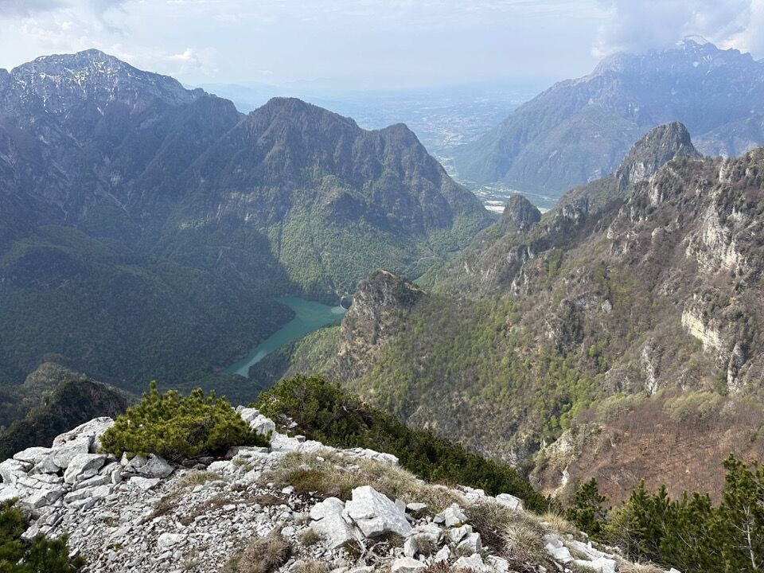 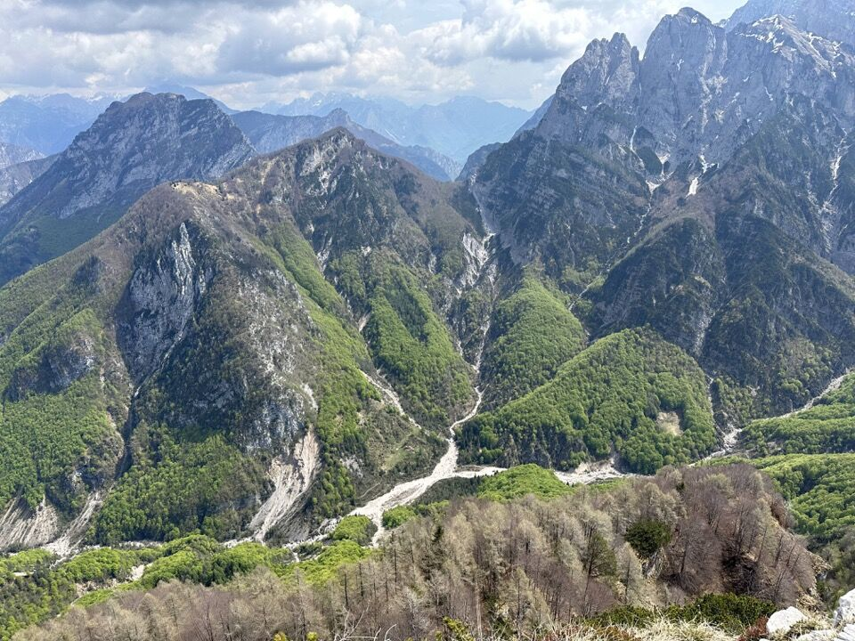 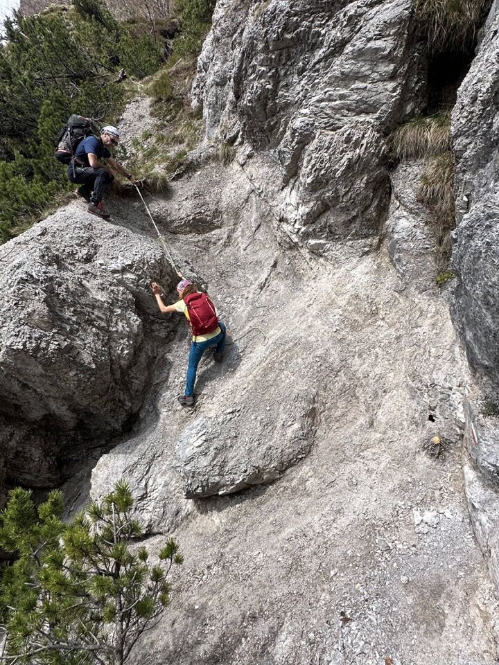